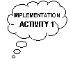
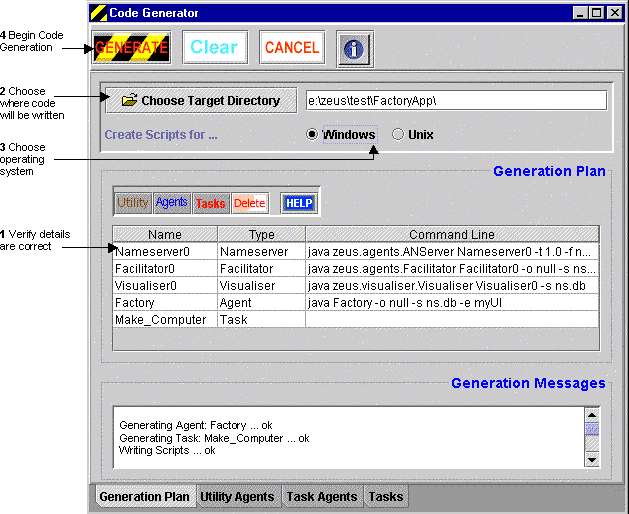
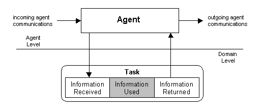
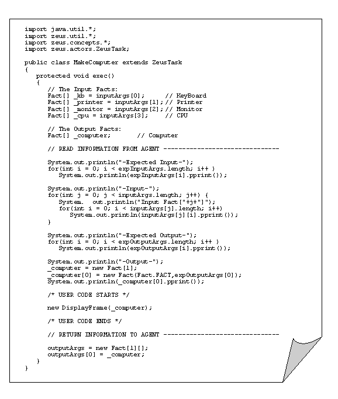
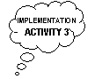
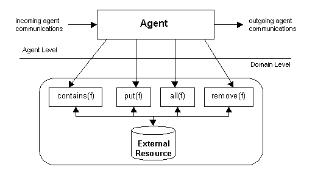
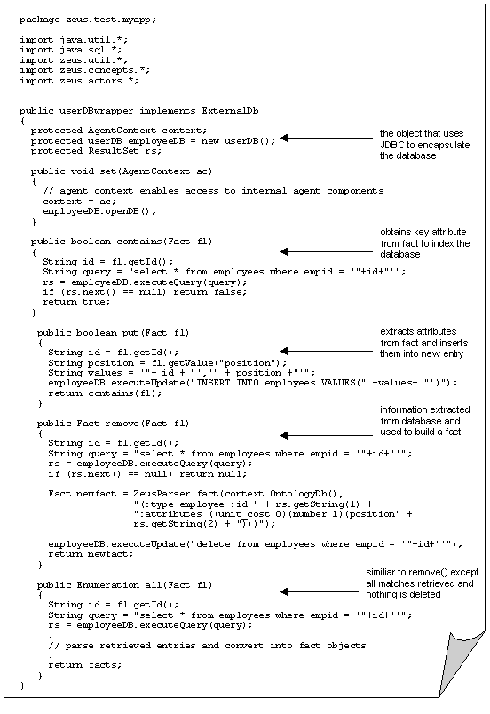
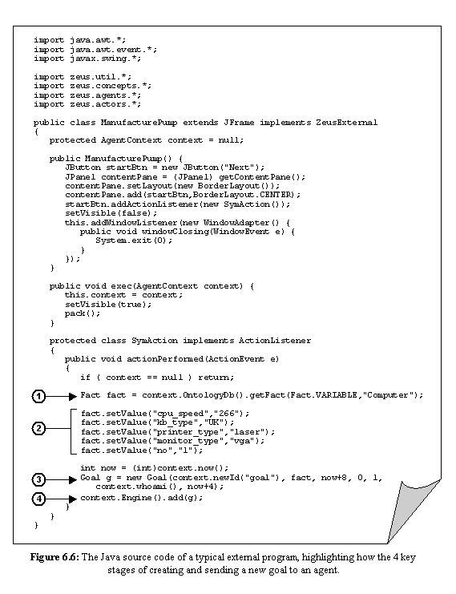
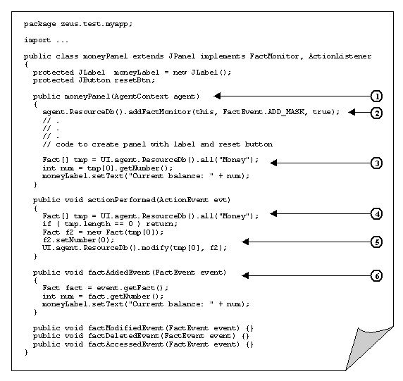

The Zeus Agent Building Toolkit |
The Application Realisation Guide |
| Contents | Introduction | Ontologies | Building Task Agents |
Utility Agents | Task Agent Configuration |
Agent Implementation |
Once the task and utility agents have been appropriately configured the next stage is to generate the application source code.
 This process again involves using the Code Generator tool, which is launched by selecting the "Generate Code"
option from the Agent Generator's menu bar, or the equivalent button from the
Project Options toolbar. The following activities can now be attempted:
This process again involves using the Code Generator tool, which is launched by selecting the "Generate Code"
option from the Agent Generator's menu bar, or the equivalent button from the
Project Options toolbar. The following activities can now be attempted:
Implementing the Task Bodies, (IMPL-2)
Implementing the External Resources, (IMPL-3)
Implementing the External Programs, (IMPL-4)
Implementing a new Interaction Strategy, (IMPL-5)
|  | IMPL-1: How to Generate Task and Agent Source Code |
As the information used to generate the agents is taken from the Generator's internal model, you should ensure that the project has been saved before attempting this stage. Code generation is achieved through the "Generation Plan" tab pane, as shown in Figure 6.1.
Unlike most other tables of the Agent Generator, the main table of Figure 6.1 can not be edited. Instead the function of this table is to display information on which agents and tasks will be created when the code generator tool is run next.
To remove an agent or task from this list, go to the "Task Agents" or "Tasks" panes and uncheck the "Generate" checkbox beside the task or agent name.
Alternatively select the entry to remove and press the toolbar's Delete button. Whilst selecting the Clear button at the top of the screen will remove all entries.
The table's type field provides an at-a-glance reference to the type of each entry; this will be Name Server, Facilitator, Visualiser, Agent or Task. Clicking on the button in the toolbar above the table enables particular entry types to be hidden or shown.
The next step is to decide where the source code will be written. As the generator will overwrite previously generated files in the same location this should be chosen carefully.
 To change
the destination of the generated source code click on the Change Target Directory
button. This will open a file dialog window, use this to navigate to the intended
target directory. Note however that a 'feature' within the current Java file
dialog means you will need to choose a file within the target directory in order
to make the selection.
To change
the destination of the generated source code click on the Change Target Directory
button. This will open a file dialog window, use this to navigate to the intended
target directory. Note however that a 'feature' within the current Java file
dialog means you will need to choose a file within the target directory in order
to make the selection.
If no files exist within the directory you will need to choose its parent and specify the directory manually by editing the path that appears in the neighbouring text-field. You may even find it quicker to type the whole path name into this field and ignore the file dialog option.
The next action is to specify which operating system the agents will be launched from. Although the agents are completely implemented in Java, and thus will run on any platform with a Java virtual machine, there are subtle differences between Windows and Unix platforms when it comes to creating the command scripts that start the agents.
The command that launches each agent is shown in the "Command Line" field of each agent entry in Figure 6.1. These are the commands that will be written into the scripts during the generation process. From Figure 6.1 it should be evident that the commands to start agents are fairly simple and easy to edit anyway, so the production of scripts is really just provided for the convenience of users.
|  |
| Figure 6.1: The Generation Plan panel, and how to use it |
To change the type of scripts created, click on either the Windows or Unix radio buttons.
You are now ready to generate the application source code by clicking on the Generate button. Messages reporting on the code generation process will then appear in the "Generation Messages" panel at the bottom of the screen.
Alternatively, pressing the Cancel button will dismiss the Code Generation window and nothing will be generated.
If the generation process is completed successfully the following files will be present in the target directory:
a Java file for each agent, named <agentname>.java; these should not be edited
a Java stub file for each task, named <taskname>.java; these may need to be edited if any external activities occur when the task is performed, (see activity IMPL-2)
Not created are the files that implementing the external resources (see activity IMPL-3), and external programs (see activity IMPL-4). Instead it is left to developers to implement the application-specific behaviour of these components. The activities that concern the implementation of the stub files and the external components are described during the following sections.
IMPL-2: How to Implement a Task |
Tasks are generated in the form of 'stub' files, skeleton implementations that can be augmented by the developer. This enables new domain-specific functionality to be integrated with the automated created agent-specific code, without needing to modify the later.
|  |
| Figure 6.2: The flow of information between an agent and a task |
Figure 6.2 illustrates the role of tasks in relation to agents. In the course of interacting with other agents an agent may need to perform a task, whereupon information is passed from agent to task. Once in the task it can be used for whatever purpose is required, before the information is returned to the agent (modified or not).
As Figure 6.2 suggests, each task consists of three sections: an initial section where the information is read in from the agent, a mid-section where it is used and a final section when it is returned to the agent. As agents are unaware of what happens inside tasks, when one is performed the agent will pass information into it regardless of whether it will be used or not. Furthermore the agent will expect to receive information in return. The interface between agent and task, i.e. the facts sent and expected back is what is specified when the developer describes the preconditions and effects of a task, (see activity TASK-1).
Consequently, of the three sections in a task the mid-section is optional and the first and last sections are generated by default in the task stub file. This means that if the task does not need to use the information passed into it, the developer need not alter the task stub file. Thus this activity is only relevant if the developer wishes to alter how the information received is used, and its scope is limited to the shaded area depicted in Figure 6.2.
A typical task implementation is shown in Figure 6.3; here the points to note are:
the interface between agent and task is the exec() method
information is passed to the task in the form of arrays of facts. This enables multiple fact instances to be passed into the task when there is precondition fact whose cardinality is greater than 1.
the information the task expects to receive, i.e. that was specified during the task definition process (TASK-1), is passed via the array expInputArgs. The information that is actually received is passed via the inputArgs array; the former can be used to validate the latter.
the facts that will be returned to the agent are created inside the task using the corresponding expected output arguments in the expOutputArgs array as a template.
the user code occurs after the parameters have been read from the agent and the expected output has been created. In this case the task results are not being modified, only passed to a separate GUI frame for display.
the created facts are returned to the agent by copying them into the outputArgs array. Hence if the task is to modify the information it should be done before this point, otherwise the changes will not be passed to the agent.
|  | ||
| Figure 6.3: The Java source code of a typical task body | ||
Typical actions that are encoded into task bodies are displaying information for the user's benefit, writing activity to a log file, or passing information to an external class for processing. The latter case should not be confused with the external programs, (see activity IMPL-4), which are called when the agent starts, rather than when tasks are executed.
Once implemented the task should be compiled normally; the resulting .class file must be present in the same directory as the owning agent's .class file for the agent to operate successfully.
|  | IMPL-3: How to Connect an Agent to an External Resource |
|  | ||
| Figure 6.4: The role of ExternalDb is as an interface between an agent and an external resource | ||
If an agent needs a resource it will first examine its local resource database, and if the necessary fact is not present it will consult its external resource database (if it has one). These external resources are not generated by the Code Generator, but written by the developer to encapsulate some non-agent storage system, like a database or external program. These are connected to individual agents by implementing the methods of the zeus.actors.ExternalDb interface, as shown in Figure 6.4.
To implement a new external resource interface you will need to create a new file in the same directory as the code for the agent that calls it. The file should have the same name that was entered into the agent's External Database field, (see activity TACF-1).
Looking at the ExternalDb interface you will see five abstract methods that need to be implemented. The first is the configuration method, called set, which is used to associate the external resource with its owner agent. The others are 'accessor' methods that enable the agent to access the contents of the external resource, these are:
|
Method |
Operation Type |
Returns |
|
Contains(Fact) |
Membership |
Boolean: true if the fact parameter currently exists within the external resource |
|
put(Fact) |
Insertion |
Boolean: true if the fact parameter was successfully inserted into the external resource. Whether duplicates are permitted is at the discretion of the external resource that implements this service. |
|
all(Fact) |
Querying |
An enumeration of all facts matching the parameter; this is not assumed to be destructive |
|
Remove(Fact) |
Retrieval |
The fact that matches the one supplied as the parameter; this is assumed to be destructive |
Consequently this activity involves writing the implementations of these methods. The methods illustrated in Figure 6.5 are part of an example application that connects a SQL employee database to an agent. The JDBC methods that enable access to the database return information in the form of strings, as a result the methods must create new fact objects using the attributes retrieved. Also notice how the SQL commands such as "select" and "delete from" are used to access the functionality of the database.
|  | ||
| Figure 6.5: he Java source code of a typical external resource interface | ||
Once implemented the external database interface should be compiled normally and the resulting .class file placed in the same directory as the owning agent's .class file.
IMPL-4: How to Connect an Agent to an External Program |
External programs, like external resources, are linked to agents through an interface: in this case zeus.agents.ZeusExternal. Thus in this context the term 'external program' is taken to mean any application specific code or non-agent software system that has been encapsulated by an implementation of this interface.
External Programs differ from external resources and task implementations in the conditions that cause them to become active and their duration. External resources are typically invoked when a fact of a particular type was sought, and only active whilst the required information is being retrieved from the resource. Likewise tasks are invoked when a particular activity is performed and terminate when the activity is completed.
By contrast, external programs are launched when the agent is started and may persist for as long as the agent does. This arises from the fact that the external program interface was originally created to enable user interfaces to be connected to agents. However external programs do not necessarily have to be user interfaces, since because the interface provides access to the agent's internal components it would be possible to link systems that can monitor or influence agent behaviour.
The key to linking an external piece of software to an agent is the process by which information in the external code is passed to some internal agent component, where it will have its effect. This requires some knowledge of the interfaces of the agent components. Whilst these interfaces are not hidden (you can see the agent components' methods by looking in the source code of the zeus.actors package), using the interfaces correctly does require some insight into the process. This section describes some of the most typical interactions between agent and external program, these are:
How to instruct an agent to do something, (IMPL-4A)
How to influence an agent's behaviour, (IMPL-4B)
How to access an agent's resources, (IMPL-4C)
This form of interaction is obviously involved when the agent receives instructions from a user interface option. (In this case the external program is analogous to the call-back methods commonly used in GUI programming to act upon GUI events).
The actions of ZEUS agents are driven by their internal goals, (an approach known within AI as goal-driven behaviour); hence to issue an instruction to a ZEUS agent all the developer needs to do is give the agent a new goal to achieve. This process is described below, and illustrated by the source code in Figure 6.6. This example is taken from a manufacturing simulation and implements a GUI with a single button, when this is pressed a new goal will be created and sent to the agent instructing it to make a new 'Computer'.
|  | ||
Encoding Objectives
A goal represents an intention to acquire some resource; hence to create a goal you will need to consider what resource represents the objective in question. Given that the application ontology has already been defined this should not be difficult. Once the desired goal type has been decided, you can edit the source code that implements the external program interface.
Add a line that retrieves a description of the fact from the ontology database. Note how the OntologyDb is accessed with the VARIABLE flag so a description of the fact is retrieved rather than a specific instance.
Once a reference to the required fact has been created you may wish to specify particular values for each of its attributes: this will restrict the specific instance obtained at runtime to satisfy the goal. (If the goal fact is not refined the agent will secure any fact of the correct target type).
To refine the fact, use the setValue() method for each the significant attributes.
The fact describes what needs to be achieved, but not when and for whom. Thus in order to create a new goal we must specify some additional information. This information may have been retrieved from a user interface, or may be encoded into the external program.
The constructor for goal objects has several parameters, (although not all may be significant depending on the objective being achieved). The first parameter is a call to create a new unique identifier for the goal, whilst the second passes the objective defined in the first two stages.
The values of the other goal parameters will depend on the objective being achieved, and application considerations such as cost and urgency, they are:
The next parameter is the End Time: an integer representing the latest time-grain by which the desired effect should be achieved. This is most conveniently expressed relative to the current time-grain. Obviously, the shorter this value the more urgent the goal.
The next parameter is Cost, this is an integer value that effectively sets the budget for achieving the goal. (You may remember from the task definition activity that tasks can have a price that their owner charges for their invocation - the interpretation of cost being decided by the developer). If the cost is not significant, 0 can be passed in this parameter.
The next parameter is Priority, this also takes an integer value but is currently not utilised during reasoning, use the default value of 1 in the meantime.
The next parameter is a reference to the name of the agent that owns the goal; the name of the agent connected to the external interface can be obtained through the whoami() method.
The final parameter refers to the Confirm Time: this is an integer representing the latest time-grain by which the requesting agent must inform the performing agent whether it has been awarded the contract. Obviously this must be before the end time, and is most conveniently expressed relative to the current time. If this is not important, a value of -1 can be passed.
Once the goal has been created it can be passed to the agent’s co-ordination engine, whereupon the agent will begin to try to satisfy the goal.
Using the reference to the co-ordination engine contained in the Agent Context, add a line that will pass it the newly created goal.
Once implemented the external program interface should be compiled normally. The external program's .class file should then be in same directory as the owning agent's .class file.
See also…
This means of affecting agent behaviour differs subtly from the goal-driven
approach, and is only applicable to agents who possess a knowledge base of
rules. The rule base is a collection of pattern-action rules, when a fact
is found that matches an existing pattern, the associated action is
performed. Hence this approach involves supplying the agent with facts
that will deliberately trigger a response in the agent, this is known as
data-driven behaviour.
Whilst activity RULE-1 describes how to associate rules with
agents, it does not describe how the external program can be used trigger
these rules to influence the agent's behaviour; it is this aspect that it
dealt with here.
As rules are triggered by the presence of certain facts or variables in the
Resource Database, the simplest way to influence an agent's behaviour is to
create the appropriate fact within the agent's external program code and
add it to the Resource Database directly. This process is illustrated with
the excerpt of source code shown below:
The description of the activity RULE-1 also explains the possible actions that can be invoked when the rule fires.
One good reason for wanting to access an agent's resource is to inspect its values. For instance, an external program such as a user interface may be used to read and display the attributes of particular resources. Alternatively, you may want modify a resource by changing some of its attributes. This is a much quicker means of changing an agent's internal state than the usual means of sending a message to the agent. Hence this is activity is particularly relevant when a non-agent piece of software needs to affect some change in an agent.
Agent resources (also known as facts) are accessible to the developer by accessing the agent's ResourceDb component. The key methods are:
|
Fact[] all(String t) |
Returns an array containing all the facts of type t currently in the ResourceDb |
|
void modify(Fact f1, Fact f2) |
Replaces the existing fact f1 with the fact f2; this is typically called after f1 has been retrieved from the ResourceDb and changed in some respect |
|
ResourceItem add(Fact f) |
Adds a new fact f to the ResourceDb, returning … |
|
Void del(Fact f) |
Permanently deletes fact f from the ResourceDb; this is typically called after a reference to f has been obtained using one of the retrieval methods |
|
Void addFactMonitor(FactMonitor mon, Long eventType) |
Registers a class that implements the FactMonitor interface with the ResourceDb; this fires add, delete and modify events when its state changes. |
An excerpt of source code that illustrates how the ResourceDb can be accessed and modified is shown in Figure 6.7.
|  | ||
| Figure 6.7: An excerpt of source code illustrating how to use and change an agent's resources | ||
This code is taken from the implementation of a panel that has a label that displays the amount of money currently possessed by the agent. The panel also has a withdrawal button, which when pressed will reset the amount of money held by the agent. The labels in Figure 6.7 are explained below:
The moneyPanel class is created, note how it is passed a reference to the AgentContext object of the agent who's resources it will display. The AgentContext object will have been passed by a class that implements the ZeusExternal interface, (see activity IMPL-4A).
The moneyPanel class registers its interest in ADD fact events that occur within the ResourceDb, (this requires that it implement the methods of the FactMonitor interface). ADD events will be triggered when new facts are added to the ResourceDb or existing facts are modified.
The Money fact is read from the ResourceDb, and its value used to initialise the label that displays the amount of money owned by the agent. These lines assume that the agent only has one resource of type 'Money', hence the first element of the array that is returned is used.
The actionPerformed method is called when the withdrawal button is pressed, whereupon the reference to the amount of money held by the agent is obtained from the ResourceDb.
Setting the Money fact's number attribute to 0 and using it to replace the existing Money resource effectively resets the amount of money held by the agent. It will also cause a fact change event to be triggered.
The factAddedEvent method is triggered by the change that occurs in the ResourceDb as a result of (5). In response the money resource is re-read from the ResourceDb and the display label is updated with the new value.
This will be documented in a future release.
In the meantime you may want to consider the sample negotiation strategies supplied with the toolkit: SimpleInitiatorEvaluator and SimpleRespondentEvaluator, which are implemented in the eponymous files found in the zeus.actors.graphs package. These provide a template from which custom strategies can be created.
Once the agents and any task bodies, external resources and external programs have been implemented and compiled, the next stage is to distribute the agents to their host machines and launch them. This process and the facilities of the Visualisation tools that can be used to inspect and interact with them are described in the final document: the ZEUS Runtime Guide.
This document has described the activities necessary to convert an agent design into a functioning agent. It is part agent cookbook and part ZEUS Generator user manual, providing both a reference of useful expertise that developers can consult to find answers to application implementation problems, whilst also advising how the problem can be solved using the ZEUS Agent Generator. As these solutions become familiar experienced developers will probably consult less document less frequently.
The current release still has gaps where toolkit functionality is yet to be documented, these should be filled in time. If you'd like to contribute to the documentation project, let me know. And of course, all errors, comments or suggestions are welcomed.
Jaron Collis (jaron@btinternet.com)
| Contents | Introduction | Ontologies | Building Task Agents |
Utility Agents | Task Agent Configuration |
Agent Implementation |